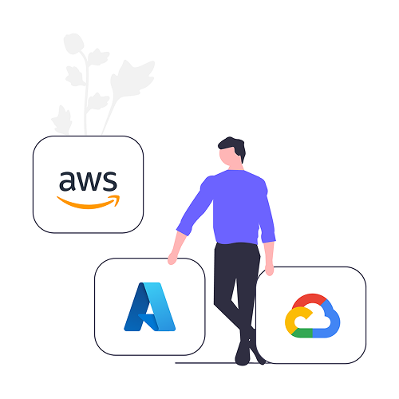
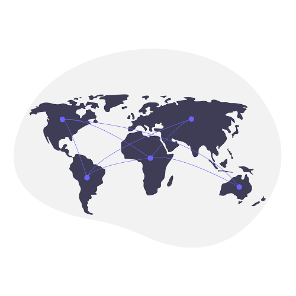
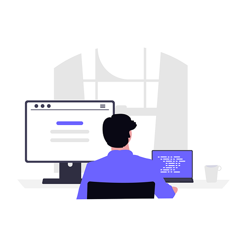
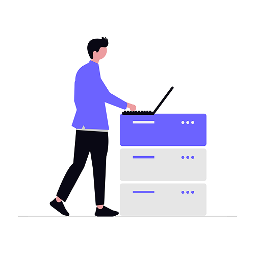

クラウド
クラウド基盤の設計・構築から運用・監視まで、柔軟で拡張性の高い環境を一貫して提供します。AWS・Azure・GCPなど主要クラウドプラットフォームに対応し、お客様のビジネス規模や要件に最適なアーキテクチャを提案します。コスト最適化やセキュリティ強化、マイグレーション支援など、クラウド活用のあらゆるフェーズをトータルでサポートします。

クラウド基盤の設計・構築から運用・監視まで、柔軟で拡張性の高い環境を一貫して提供します。AWS・Azure・GCPなど主要クラウドプラットフォームに対応し、お客様のビジネス規模や要件に最適なアーキテクチャを提案します。コスト最適化やセキュリティ強化、マイグレーション支援など、クラウド活用のあらゆるフェーズをトータルでサポートします。


安全性と可用性を重視したネットワーク設計で、安定した通信インフラを実現します。拠点間VPNやSD-WANの導入から、ファイアウォール・UTMによるセキュリティ対策まで幅広く対応します。障害発生時の迅速な復旧体制も整備し、ビジネスの継続性を損なわないネットワーク環境をご提供します。
業務要件に合わせたシステム開発で、ビジネスの効率化と価値向上を支援します。要件定義から設計・開発・テスト・リリースまで一貫した開発体制のもと、品質の高いシステムをお届けします。アジャイル開発にも対応しており、変化するビジネス環境に柔軟に適応しながら、迅速なシステム改善を継続的に行います。


24時間365日の運用・保守体制で、システムの安定稼働を継続的にサポートします。専任のエンジニアが常時監視を行い、障害の予兆検知から迅速な対応まで一貫して対応します。定期的なメンテナンスやバージョンアップ対応も含め、長期にわたってシステムのパフォーマンスと信頼性を維持します。